flash-attn
Flash-attention 学习
一直在用但是还没真正去学习，最近在看有关dsa算子的部分，想要去看一下flash-mla的实现，但是flash-attn这个前置条件还没满足
趁着最近几天都没有什么workload，来学习一下
背景
attention is all you need，在transformer架构里attn是最基本也是最重要的一个组件
从最标准的self-attn，到后面出现的 Multi-Head Attn，Multi-Query Attn，Multi-Group Attn，DeepSeek Sparse Attn等等都是以他为基础的一些延伸
在一次attn的计算中，最为特殊的一个运算就是softmax（这里使用的是safe-softmax，也就是在基础款之上减去里一个max值，防止数值溢出）
因为它不是线性的，不能运用结合律，也不像一个常见的 GEMM 运算一样可以进行诸如分块运算的性质，甚至你还需要寻觅一个的值，这就意味着需要先把整个qk的结果得到之后再来做归一化
因此flash-attn想做的就是将这个全局的过程进行解耦，能够像其他的矩阵运算一样进行分块运算，使用 Tiling 来读取 sRAM 进行片上的快速运算而不是完整从显存里读取大矩阵
btw，至于一些如 Linear Attn 也是想要摆脱sm运算不可结合的特征，改变计算顺序让kv先计算得到一个更小的矩阵
0. Online Softmax
如图所示，对于一个标准的self-attention，获取的结果需要进行三轮循环，本别是找到最大值，计算exp之和，最后计算 里的元素
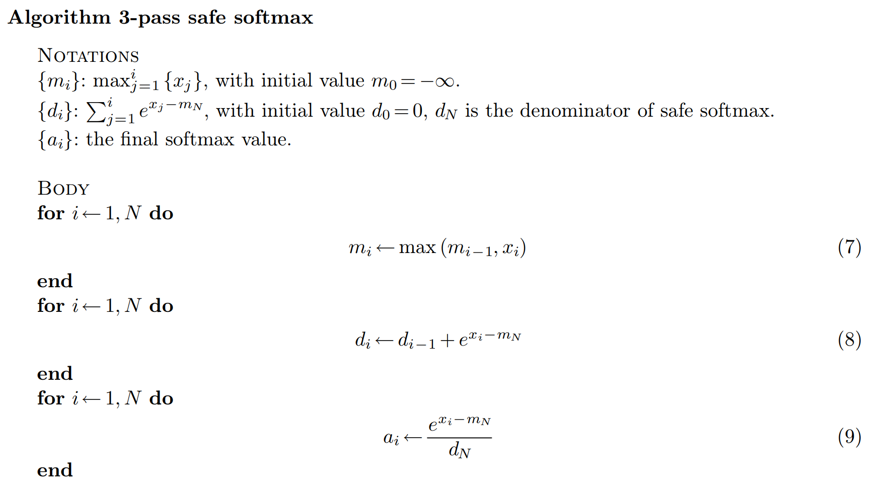
能不能减少循环的次数呢？之所以需要三次循环，就是因为计算分母这里的指数之和的时候依赖一个最大值max(x)；但是这不是必须的，因为无论如何在最后一次循环的时候这个最大值一定会被算出来。利用递推的思想，令 ，只要递推的找到和的关系并进行一次缩放就可以了
换句话说，在里是出于安全原因引入的所有项共享的一个scalar，我们只要在每轮的时候都维护一个局部最大的scalar并一直更新，最终就能得到一个全局的最大scalar
具体到递推的公式：
于是就将多出来的一个循环又重新塞了回去
那既然能把3pass压缩成2pass，能不能进一步压缩成1pass呢？
答案是否定的。因为这里我们是结果导向的，只关心最终的，中间产生的是没有真实用处的变量；但是最后得到的却是从1到N都是需要存下来的最终结果
吗？这是from online attn to flash-attn得出的结论
但是其实既然最后一轮一定能得到，那么要做的其实就是递推维护一个，其中，，记这个变换为，（这里的下标意味着是第i轮循环中在第j个位置被维护的）
（如果不能1pass的话，flash attn也是绝对做不到1pass的，因为它要使用中所有的标量来对进行加权）
1. Flashattn-v1
应用上面的算法之后就得到了2pass flash attn，因为这篇note并没有发现online softmax 1pass的方法，因此它是从2pass出发的
Note
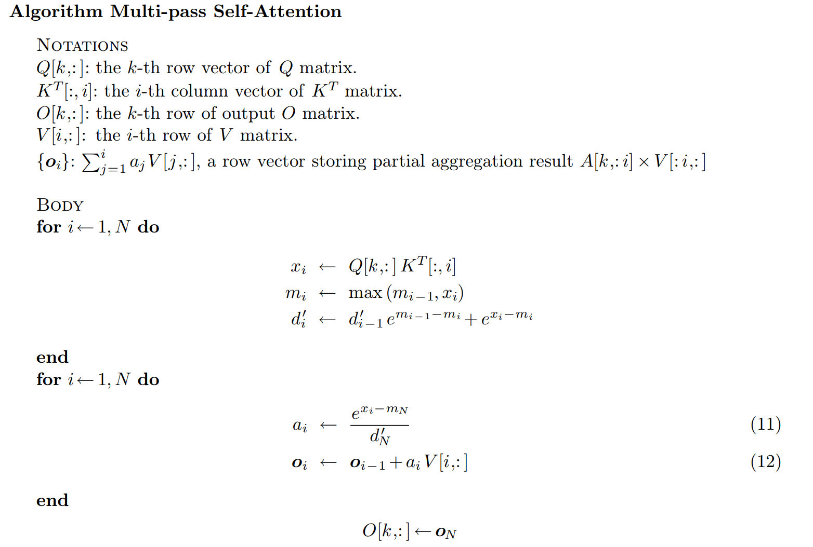
当然我们已经经历过Online Softmax 从 2pass 到 1pass 的递推过程，我们能直接类比得出flash-attn，其实就差最后一步对进行加权了
复用刚刚的变换
又从到的运算过程是一个加权，即在循环到第轮的时候，，又有，所以只要对轮的结果进行一个变换，再新增第轮加进去的即可
最终得到的递推式：
至此就推导出了 flash attn 的理论部分
paper
1-pass
而paper里的算法部分如下：
这是standard的做法，需要完整计算出并把它写回 HBM，然后再读取出来计算并写回
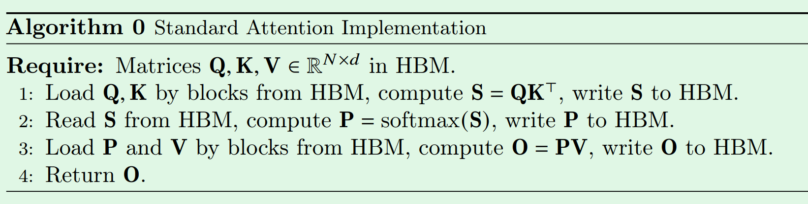
而这是flash attn的伪代码
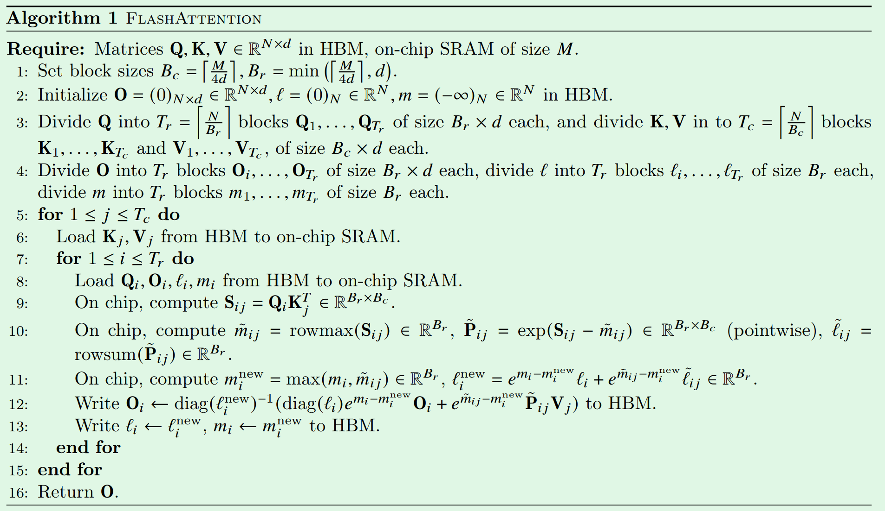
总体思路和上面的推导是一样的，只不过这里换了一点符号；同时引入了外层的大循环，因此角标会变成(row, colume)；并且把的动作用矩阵乘法来代替
而 paper 里的证明写的稍微复杂严谨了一些
这是符号的定义
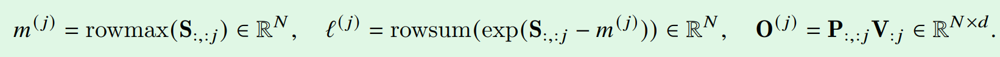
画线的部分就是代数上的关系，最后的一坨就是把等价关系代到递推式里得到的证明
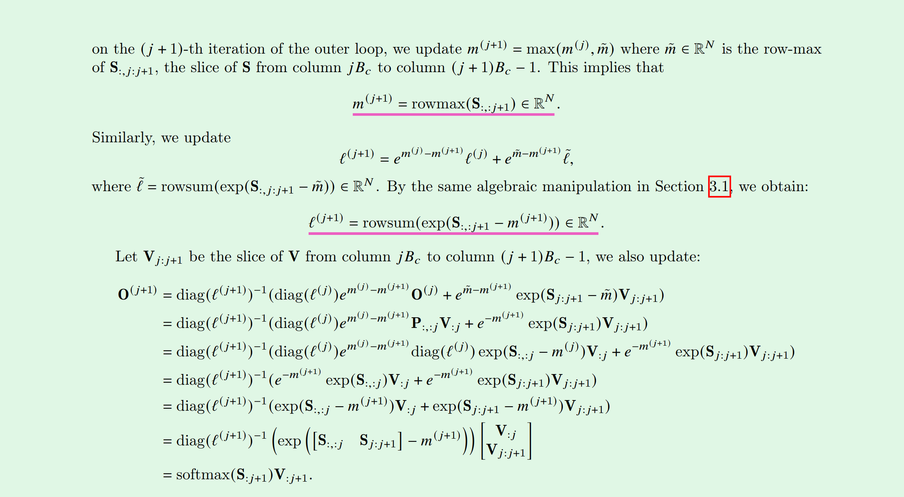
这里还引入了一个 block size 的概念，
它其实就是把QKV分成确保SRAM能放下的小块，同时保证尽量打满SRAM
这里最后再补充一张示意图
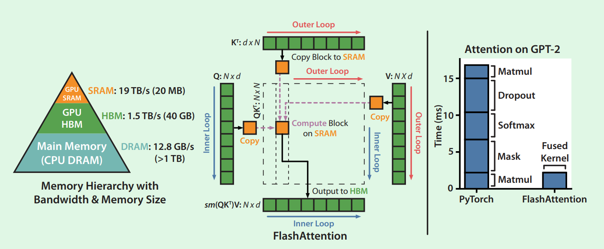
可以看到flash attn通过数学的转换将需要读写 HBM 的运算变为在 SRAM 上进行，是非常优美的算法和硬件协同
Sparse
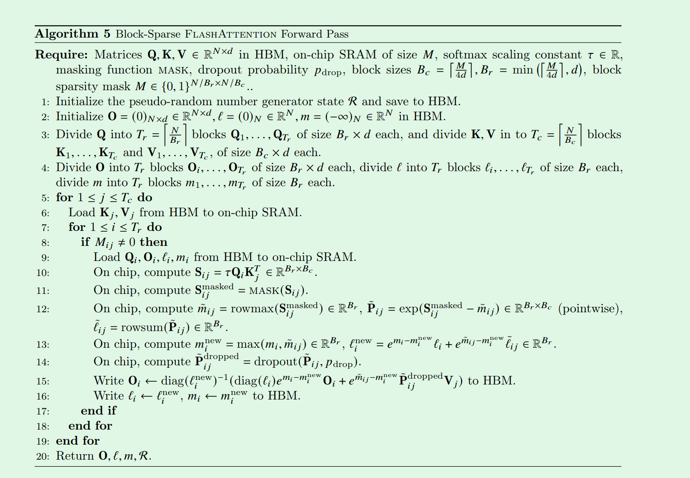
Backward
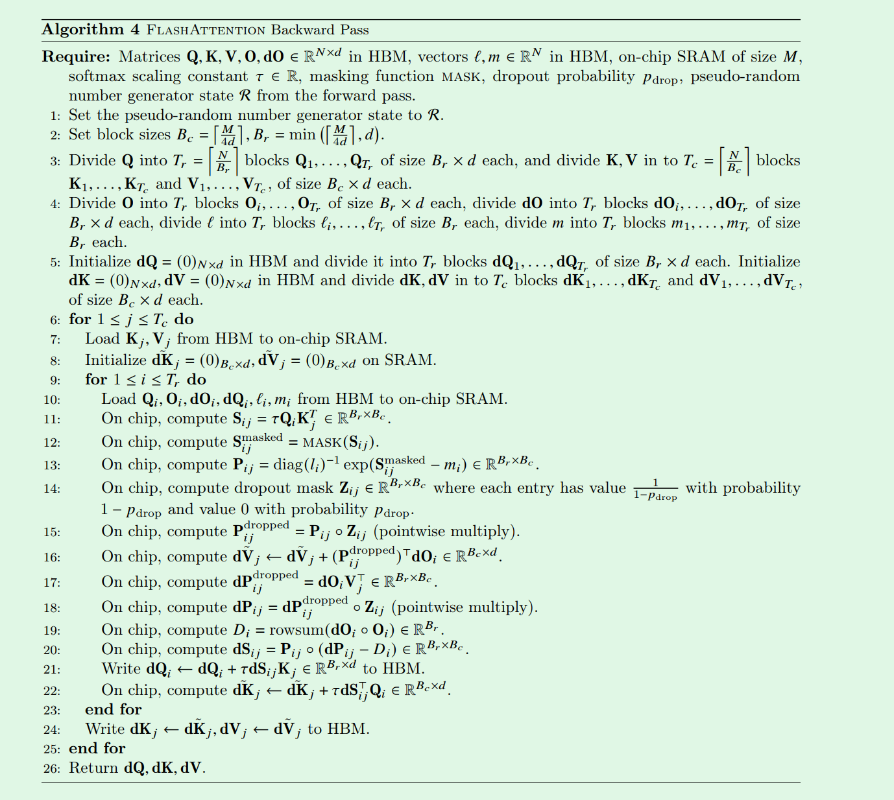
FlashAttention backward pass最主要的优化就是：Recompute。对比Standard Self Attention，FlashAttention在前向不需要保留S和P矩阵，所以backward的时候也要重新计算一遍S和P
既然是重算，为什么还是优化呢？因为standard的实现里是要读取，写回的这个I/O过程的overhead远大于计算量的增加；同时也能减少OOM的风险
这也就说明随着迭代，在芯片上计算是越来越廉价的，但是 I/O 还是很昂贵
2. Flashattn-v2
这篇是对第一篇技术上的优化
1). 减少非matmul的冗余计算
在一块芯片上，非matmul计算使用的是cuda core，会显著慢于专门为矩阵运算设计的tensor core
而之前每一轮的递推公式 O = diag(ℓ_old / ℓ_new) * O_old + b 中就有这样的逐元素的标量除法，也就是每一轮进行的 **rescale **会带来冗余的计算
其实对于的运算，分母在中间的过程的更新可以一次性放到最后一轮。这样可以节省每一轮的rescale，在整个过程中只需要维护一个缩放因子的标量，而不是逐个更新向量里的每一个元素
算法如下：
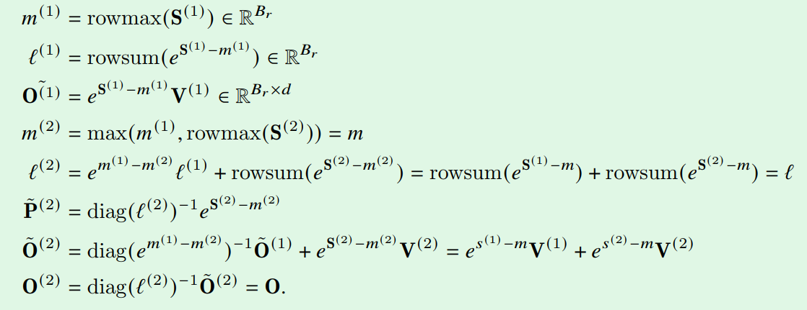
2). 调整循环顺序
其实到这里我才发现 v1 的实现是用 KV 做的外循环，Q是内循环
我潜意识里一直以为是用的 Q 外循环，因为一直在强调利用SRAM而不是HBM，只有用 Q 外循环才能保证每一次递推的 能够存在片上；如果是KV外循环，那么每次就要从HBM I/O了；并且使用外循环的话，外循环之间是完全独立的，也就可以更好的进行并行的运算
对比图大概长这样
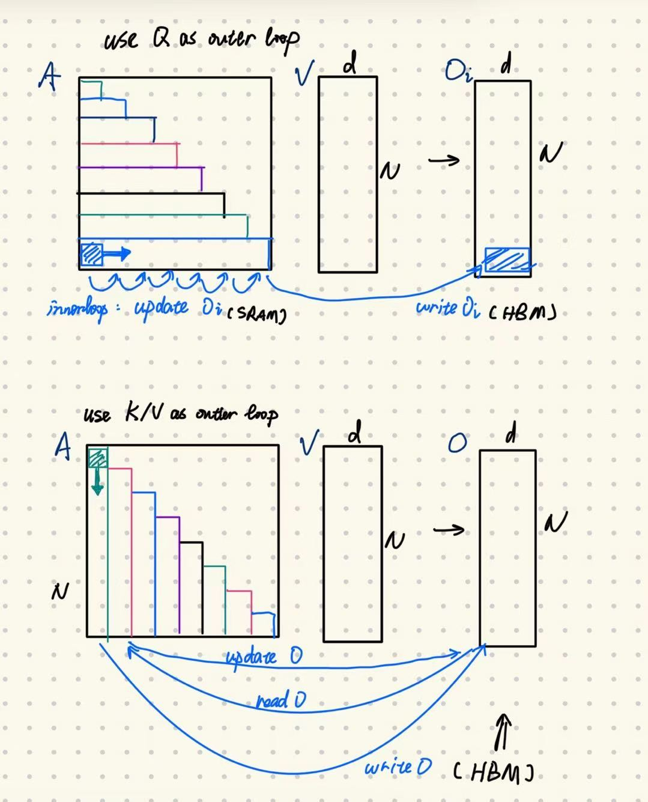
而在bwd当中，并没有调整循环的顺序，issue里的意思是这样通信时间更少一点
3). Warp partition
首先再回顾一下block level的并行
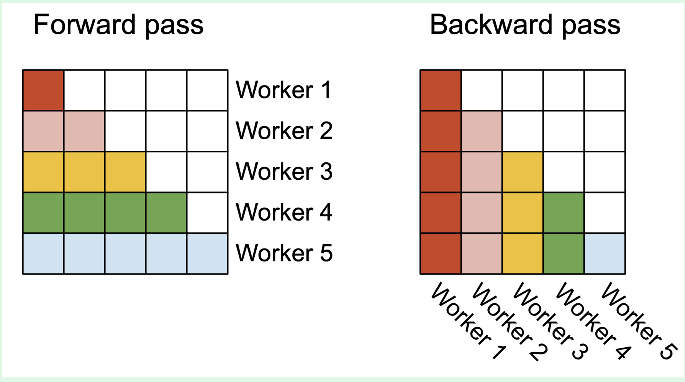
如图，在fwd中，v1采用的是右边的形式，v2采用的则是左边的形式
再看 block 内部的 warp 的情况
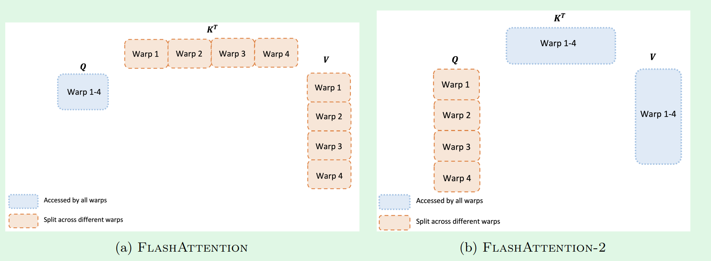
v1是采用了sliceKV的方式进行warp的，这和它 block 执行的顺序是一致的
这个图或许不能直观的看出这两种partition的方式究竟有什么影响，那么看看下面这张图
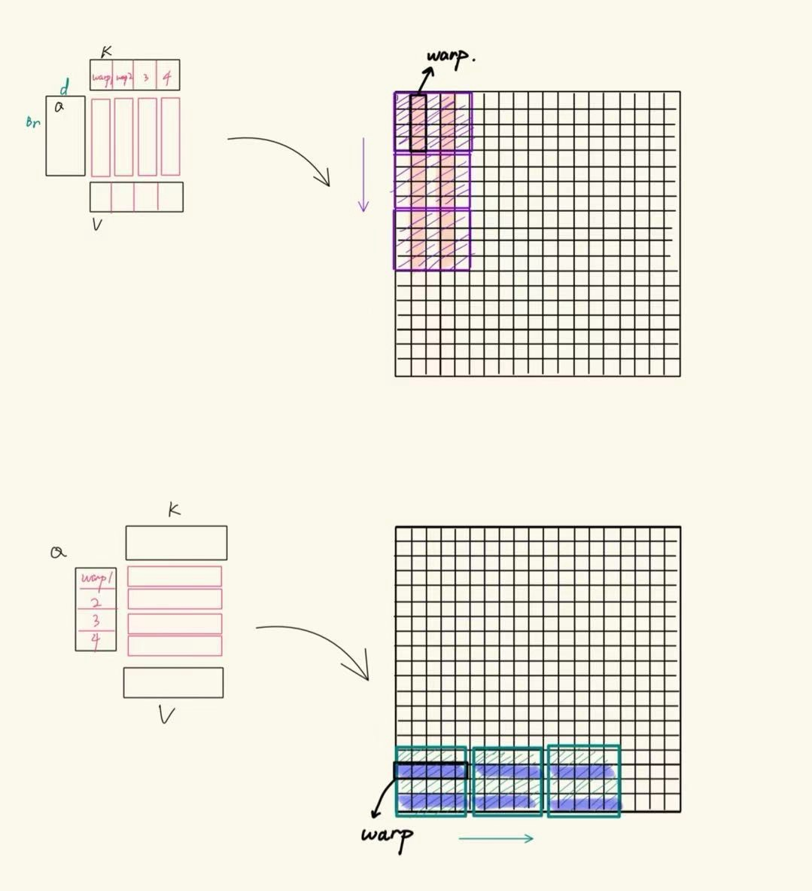
上面展示的是v1的划分方式，可以看到warp的分布取向是和block的分布方向相一致
这种 warp 的分布带来的问题就是需要额外的通信，
- QK 得到的结果去对 V 进行加权的时候需要互相之间通信
- rowmax 运算需要跨 warp 通信
而使用下面展示的v2的划分方式，对 V 作线性组合的操作以及执行 rowmax 均是在warp内的，不需要额外的通信，如此一来就减少了进行同步__syncthreads()以及再从SMEM中读取的开销
其实也没有什么依据认为第一种划分和v1的循环方式是有因果的，甚至可以认为是独立的改进了两个方面；
因为在 v1 上任意改动循环/warp partition都将带来收益，而且我感觉是没有什么联合的额外收益的
多说一句，这里paper说的split-k一开始没理解
Each warp multiplies to get a slice of QK⊤, then they need to multiply with a slice of V and communicate to add up the result. This is referred to as the “split-K” scheme
后来大概明白应该指的是和CUTLASS GEMM里处理矩阵乘法的时候的split-k策略比较类似
在一个乘法中，共同的维度被称为K，而进行这个乘法有两个策略：
- k-sequential：沿着M/N轴
- split-k
后记
有关cutlass的类比部分待补充
FA巧妙的使用了数学上的递推来将Tiling的思想应用到了巨大的attn计算上，这无疑是软硬件协同的一个优美的实践
对于Flash decoding等到有空的时候再去学习一下
Reference
- from online attn to flash-attn
- zhihublog
- Flash-attn v1/v2 paper